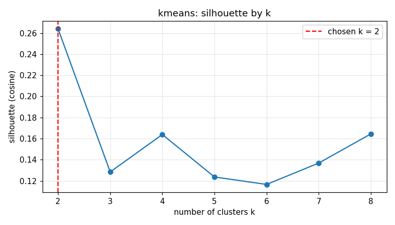
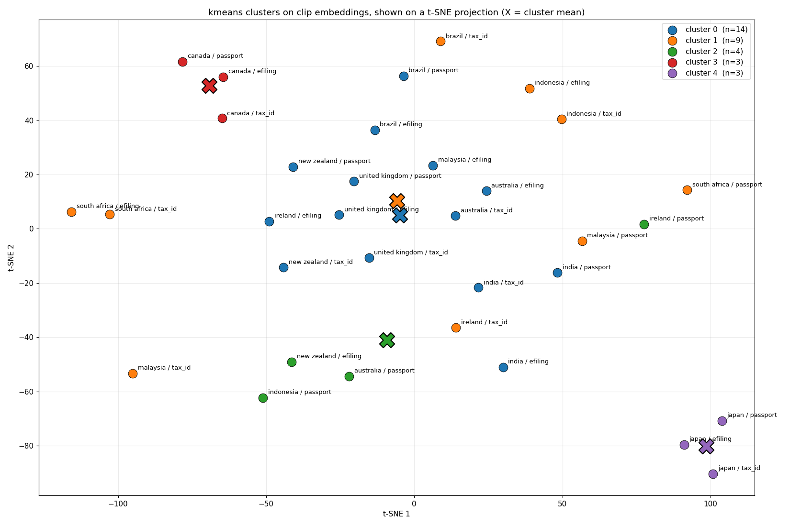
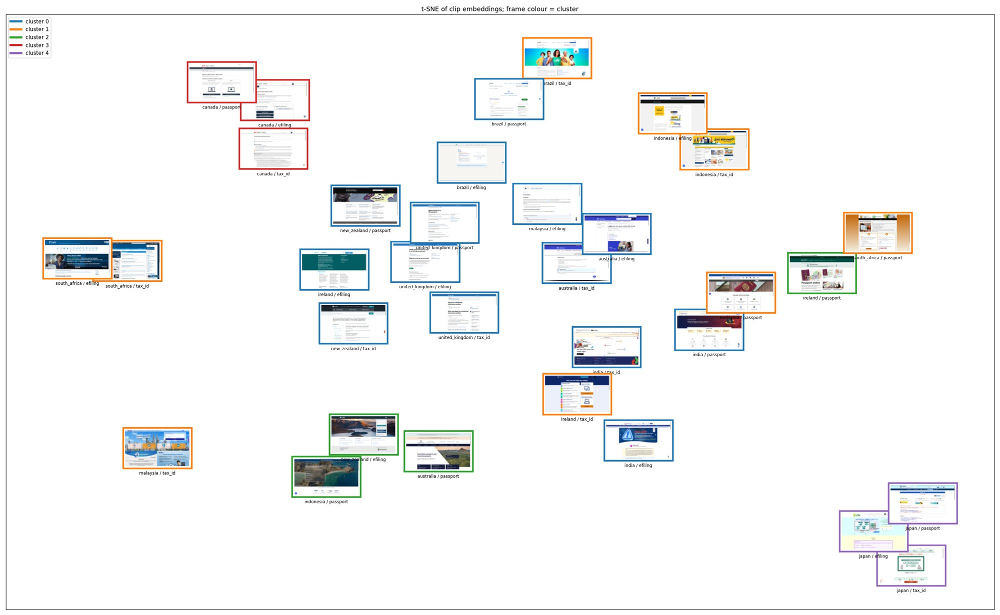
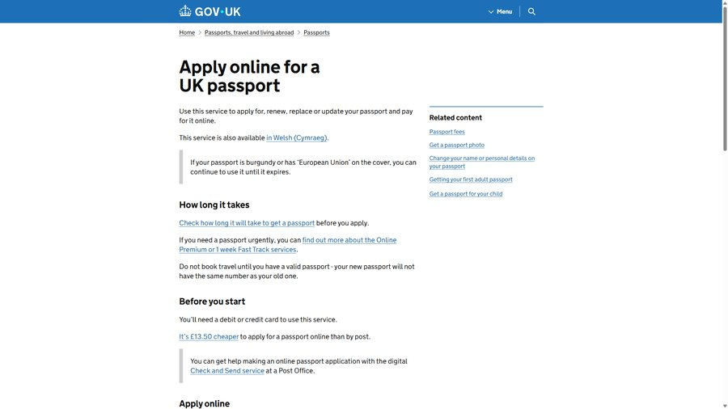
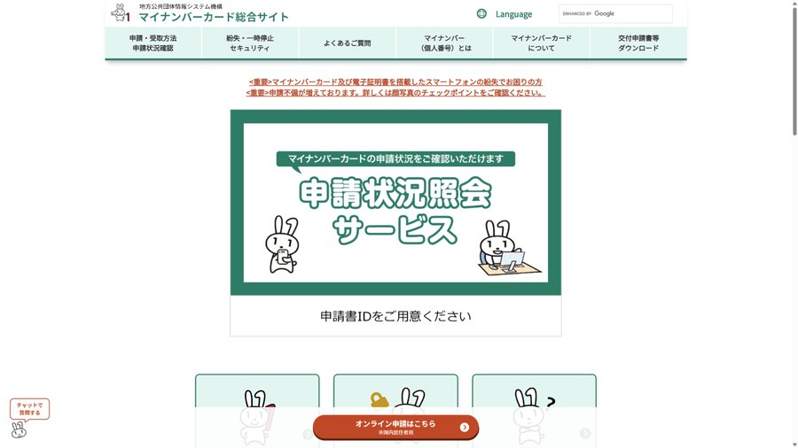
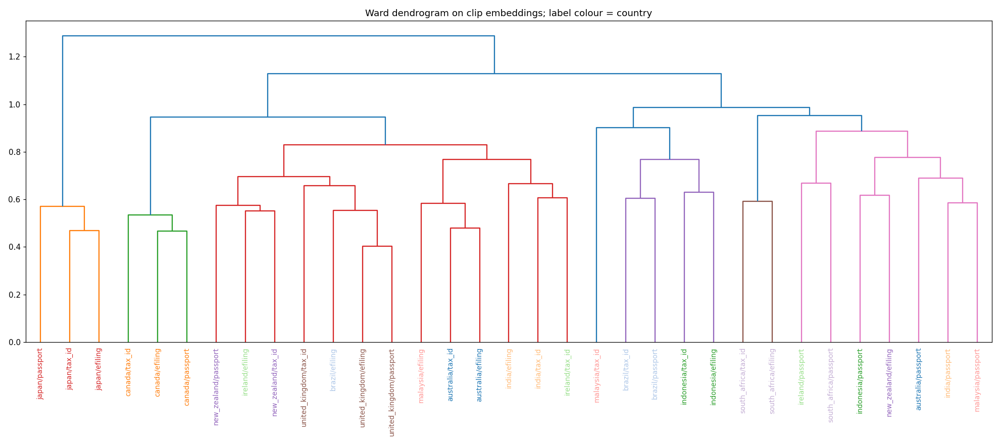

3 October 2026 · 33 screenshots · 11 countries · 3 services each
Government portals, sorted by look
One screenshot each of a tax‑number page, a tax‑filing page and a passport page from eleven countries. The pictures go into an image model, the numbers that come out go into a clustering algorithm, and the algorithm sorts the pages into visual families. This page explains every step with a small worked example, then shows what came out.
Contents: where the idea came from · the data · the pipeline, step by step · what came out · reproduce it
Where the idea came from
The method is borrowed. In a video and an accompanying blog post, Sabrina collected 2,671 screenshots of popular websites from many countries, turned each one into a list of numbers with an image model (ResNet101), flattened those lists to two dimensions with t‑SNE, and drew the screenshots at their coordinates. Japan’s sites sat in their own region of the map: lighter, denser, more text. The picture did the arguing.
This project asks a narrower question with the same tools. Government service pages are the sites people are forced to use. Do they sort into visual families too, and if so, what are the families?
The data
Eleven countries: Australia, Brazil, Canada, India, Indonesia, Ireland, Japan, Malaysia, New Zealand, South Africa and the United Kingdom. For each, three pages were chosen by hand: the page where you apply for or look up a national tax identifier, the page where you file income tax online, and the page where you apply for a passport. That is 33 URLs in a spreadsheet.
Each page was opened in Chromium at 1920 × 1080 and photographed once, without scrolling. What you see is what a person sees on arrival. Nine of the 33 pages arrived behind a cookie banner, a notice modal, or both, and one needed four modals dismissed in a row before any content was visible. Those overlays had to go, because in the first attempt at clustering they were most of what the algorithm saw.
The pipeline, step by step
Six stages, in order. Each one is small. The worked examples use two, three or four numbers so you can check them by hand; the real vectors have 512 or 1,024 numbers, and the arithmetic is identical.
-
1.0
Capture
Playwright drives a real Chromium window. For each URL it loads the page, waits up to fifteen seconds for network activity to stop, runs the banner handler, settles for ten seconds, runs the handler again for anything that appeared late, and saves a PNG named after the country and service. One run of the script produces all 33 files.
-
2.0
Turn the whole page into numbers
An embedding is a list of numbers that stands in for an image. The list is produced by a neural network trained so that images which look alike produce lists that point in similar directions. We use CLIP, a model from OpenAI that learned from millions of image–caption pairs, in its ViT‑B/32 size. Give it an image and it returns 512 numbers, always 512, for any image.
CLIP expects a 224 × 224 input. We resize the full 1920 × 1080 screenshot down to that square, squashing rather than cropping, so no part of the page is thrown away. At that size a web page is a blur: body text becomes grey texture and small controls vanish. What survives is the big picture, literally: overall colour, where the dark and light regions are, whether there is a photograph.
-
3.0
Turn six tiles into numbers, then average them
To let the model see detail, the same screenshot is also cut into a grid of two rows by three columns, six tiles of 640 × 540 each. Each tile is squashed to 224 × 224 and embedded on its own, giving six separate lists of 512 numbers. Those six lists are then averaged position by position: the first number of the result is the mean of the six first numbers, the second is the mean of the six second numbers, and so on down to position 512.
tile 1 = [0.9, 0.1, 0.4] tile 2 = [0.7, 0.3, 0.6] mean = [(0.9+0.7)/2, (0.1+0.3)/2, (0.4+0.6)/2] = [0.8, 0.2, 0.5]Why average instead of keeping all six? Three reasons. Laid end to end, six lists would make 3,072 numbers in which the position of each tile matters, so two pages with the same style but the hero on different sides would look different. With only 33 pages, 3,072 dimensions is a lot of room for noise. And averaging reinforces whatever the tiles agree on while cancelling what is specific to one tile: if five tiles are dense text and one is a logo, the mean leans toward dense text, which is what “style” should mean.
-
4.0
Join the two halves and normalise
Each page now has two lists of 512: the whole‑page embedding and the tile average. They are laid end to end into one list of 1,024. Positions 0 to 511 hold the whole‑page numbers; positions 512 to 1,023 hold the tile numbers. Nothing is mixed across the halves.
whole = [0.6, 0.0, 0.8] positions 0..2 tiles = [0.0, 1.0, 0.0] positions 3..5 joined = [0.6, 0.0, 0.8, 0.0, 1.0, 0.0]
Then every list is divided by its own length. Here “length” means the geometric kind: square every number, add them up, take the square root. Dividing by it leaves a list that still has the same count of numbers but whose length is exactly 1. This is called L2 normalisation.
a = [3, 4] length = sqrt(3² + 4²) = sqrt(25) = 5 a / 5 = [0.6, 0.8] c = [2, 0, 4, 4] length = sqrt(4 + 0 + 16 + 16) = sqrt(36) = 6 c / 6 = [0.33, 0, 0.67, 0.67] v = [x0, x1, …, x511] length = sqrt(x0² + x1² + … + x511²) v / length → 512 numbers, each divided by that one length
Two words get confused here. The dimension is the count of numbers, 512 or 1,024, fixed by the model. The length, also called the norm, is the geometric size, which varies from image to image. Normalising fixes the norm to 1 and leaves the dimension alone.
Why divide at all? Because only the direction carries meaning. The raw numbers from CLIP come out larger for some images than others for reasons that have nothing to do with style. Two pages that look the same but produce lists of different size would seem far apart. After dividing, they coincide:
a = [3, 4] → a / 5 = [0.6, 0.8] b = [6, 8] → b / 10 = [0.6, 0.8] same direction, now identical
Two practical consequences follow. Multiplying two normalised lists position by position and summing gives the cosine of the angle between them, a similarity score from −1 to 1. And k‑means, which measures straight‑line distance, is tied to that score on normalised lists by the identity distance² = 2 − 2 · cosine, so it ends up grouping by angle too. Each half is normalised before the join so the two halves carry equal weight, and the joined list is normalised again to tidy it back to length 1.
This is different from the scalers you may know from scikit‑learn.
MinMaxScalerandStandardScalerwork per column: they take one position across all 33 pages and rescale that column. L2 normalisation works per row: it rescales one page’s numbers together and ignores the other pages.pos0 pos1 page A 3 4 L2 per row: A → [0.60, 0.80] page B 6 8 B → [0.60, 0.80] page C 0 1 C → [0.00, 1.00] MinMax per column (pos0 runs 0..6, pos1 runs 1..8): A → [0.50, 0.43] B → [1.00, 1.00] C → [0.00, 0.00]L2 makes A and B identical because they point the same way. MinMax keeps them far apart and pushes C into a corner, because it only cares about each column’s range. Column scaling is the right tool when features have different units, height in centimetres beside income in dollars. CLIP’s 512 positions are already on a shared scale, and rescaling each would inflate the noisy low‑variance positions and change the angles we want to keep.
-
5.0
Cluster with k‑means
k‑means takes a number k and finds k groups. In plain words: place k centre points among the pages, assign every page to its nearest centre, move each centre to the average of the pages assigned to it, and repeat until nothing moves. The result depends on where the centres start, so the algorithm is run from twenty random starts and the tightest answer is kept. All of this happens in the 1,024‑dimensional space, not on a picture.
k has to be chosen. We use the silhouette score: for each page, how much closer it is to the pages in its own cluster than to the pages in the nearest other cluster, scaled from −1 (clearly in the wrong group) to 1 (clearly in the right one). The average over all pages scores a clustering. Run k‑means for k from 2 to 8 and keep the k with the best average.
k silhouette reading 2 0.264 best; one small unusual group against everything else 3 0.128 4 0.164 5 0.124 used below as a reading aid 6 0.117 7 0.137 8 0.164 Scores in the 0.1 to 0.3 range mean the groups are real but soft. The first split is sharp; after that, the pages shade into one another rather than falling into boxes.
Before k‑means we used Ward. Ward’s method is hierarchical: it starts with every page as its own cluster and repeatedly merges the two clusters whose merger raises within‑cluster spread the least. It minimises the same quantity as k‑means, so on this data the two agree almost everywhere. Ward’s extra gift is the dendrogram further down, which shows the whole merge order at once.
-
6.0
Draw it
A 1,024‑dimensional space cannot be drawn, so for the plots only, t‑SNE squashes each page down to two coordinates. t‑SNE works hard to keep each page’s nearest neighbours close on the map and does not promise anything about long distances. The cluster colours on the map come from k‑means in the full space, which is why one page can sit far from its cluster‑mates on paper and still belong with them. Read the map as a neighbourhood sketch, not a measurement.
What we tried first, and why it failed. The first version of this project skipped the image model. Each screenshot was shrunk to 512 × 512 greyscale, the raw pixel values were reduced with PCA to 22 numbers, and Ward clustered those. The clusters it found were “pages with a dark hero”, “pages with a dark footer” and “white pages”. Raw pixels mostly encode where the bright and dark areas are, and the cookie banners still present in several shots were driving placement. The silhouette was about 0.20 and the number of clusters changed between runs. Swapping pixels for CLIP embeddings and cleaning the inputs is what made the structure below appear.
What came out
With k chosen by silhouette, the answer is two clusters: three pages with a pastel, illustrated, notice‑heavy look on one side, and the other thirty on the other. That split is real, and it was the first thing the data said even on the uncleaned screenshots. It is also not very informative on its own, so the five‑cluster cut is used as a reading aid. Five is not a claim that five sharp design families exist; the silhouette falls off after the first split.



The five clusters
One example page from each, then what the members have in common.


- White, text‑first service pages. White background, one brand‑colour header band, left‑aligned heading and body text, blue links, a button or two, little or no imagery. The dominant mode in the set. Pages with a notice carousel or a small illustration still land here as long as text carries the first screen.
- Dense portals and banners. A wide banner photo or illustration of people or landmarks, grids of icon tiles, news lists, several competing calls to action, strong colour fills. Three or more distinct content blocks visible above the fold. The home‑page look rather than the single‑task look.
- Full‑bleed scenic hero. One landscape photograph fills most of the viewport with a login card or a short headline on top and very little text. The closest these pages come to a consumer travel site. Three of the four are passport pages.
- Near‑empty white. Most of the viewport is blank: a small header, then a form box or a block of terms. Single‑task, legal and transactional in tone, with no imagery at all.
- Pastel panels, mascots and notices. Blocks of pastel background, illustrated mascot characters, red‑bordered notice boxes, carousels and many small links. The most distinct visual language in the set and the group the k = 2 split isolates.

Observations across the set
- Service type does not determine style. The large white cluster holds tax‑number, tax‑filing and passport pages in equal measure. The one tendency by service is that the scenic‑hero pages are mostly passport pages.
- Style follows the publishing organisation, not the task. Five of the eleven three‑page sets land entirely in one cluster, and the dendrogram shows the same: pages from one government merge with each other first.
- The common case is plain. Fourteen of 33 pages are white, text‑led and low in saturation. The “dark and empty” style the original post found common on commercial sites is essentially absent here.
- Imagery comes in two kinds that rarely share a page. Photographs are of landscapes or passport documents. Illustrations are of people or mascots.
- Interstitials are common. Nine of 33 pages opened behind a banner or modal. Left in, they dominated the raw‑pixel clustering; removing them is what let style show through.
- The 2‑D map is a sketch. k‑means runs in the 1,024‑dimensional space. One page is grouped with the small cluster at k = 2 yet sits far from it on the map, so distances on paper are suggestive, not literal.
For comparison, the same pipeline with an ImageNet ResNet101 backbone, the features the original analysis used, gives a weaker silhouette (0.205 at k = 4). The pastel group still clusters together but is mixed with nine other pages, and ResNet rewards shared chrome such as identical header bars more than overall page style. CLIP separates style more cleanly on a sample this small.
Caveats, briefly. Thirty‑three pages is a small sample, so the silhouette scores stay modest even though the structure is readable. Each page was photographed once, on one day, at one viewport size. The clusters describe how the pages look on arrival, not how they work.
Reproduce it
The repository holds the spreadsheet of URLs, the capture script, the embedding and clustering script, and the results folder with every plot on this page plus the written observations. Python 3.10 and uv are the only prerequisites; the first run downloads the CLIP weights.
uv sync uv run playwright install chromium uv run python take_screenshots.py # 33 shots → resources/pictures/ uv run python embed_cluster.py # k by silhouette → results/ uv run python embed_cluster.py --k 5 # the five-cluster reading aid uv run python embed_cluster.py --backbone resnet101 --out results/resnet101